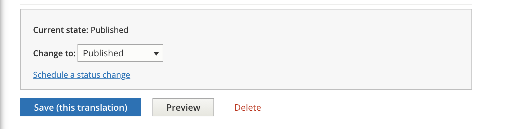
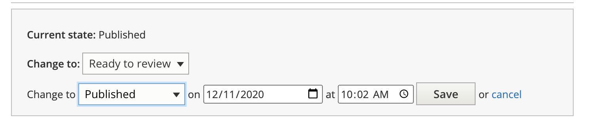

Scheduling Revisions¶
Warning
Scheduling revisions are per-language. Scheduling a publishing revision for English will have no impact on Spanish or Polish and vice versa. You can create a Spanish revision for example and schedule it for a later date and still continue to make live revisions to Polish and Spanish with no impact.
These instructions apply only to content types subject to moderation:
legal content
ADRM content
Toolbox tool
Tool steps
It does not apply to portal pages, toolboxes, or any other type of content at this time.
To schedule a revision, at the bottom of the edit form and click on “Schedule a status change”
Set your schedule change
Save your revision
Note
Revision scheduling rely on a scheduled task on the back-end that runs approximately once an hour. Revisions may not go live or be taken down at the exact time you entered.
Use Cases¶
To publish later:
Change the current status to Ready to Review. This will leave the original published revision as is
Schedule a change to Published for the date/time you want the revision to take.